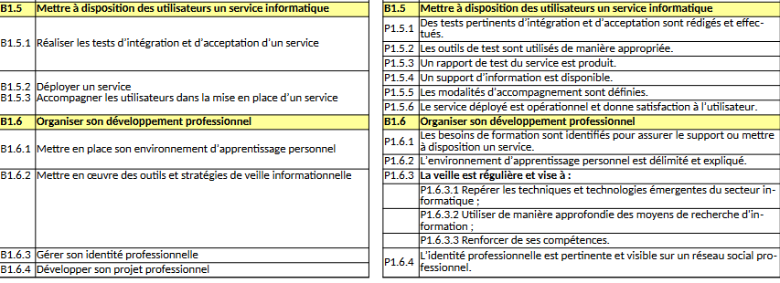

Tableau de compétences du BTS

Preuves des compétences acquises :
P1.3.3 : Les mentions légales sont accessibles et conformes à la législation :

P1.1.5 : Les sauvegardes sont réalisées dans les conditions prévues conformément au plan de sauvegarde :
utilisation d'un gitlab dans le cadre du PPE
B2B.3.1 : Exploiter des données à l’aide d’un langage de requêtes :
B1.3.1 : Participer à la valorisation de l’image de l’organisation sur les médias numériques en tenant compte du cadre juridique et des enjeux économiques.

B1.4.2 : Planifier ses activités - P1.4.4 : le découpage des tâches est réaliste
P1.4.6 : Le projet est documenté :
P1.6.3 : la veille informatique
Voir iciB1.6.3 : gérer son identité professionnel / B1.6.4 : Développer son projet professionnel